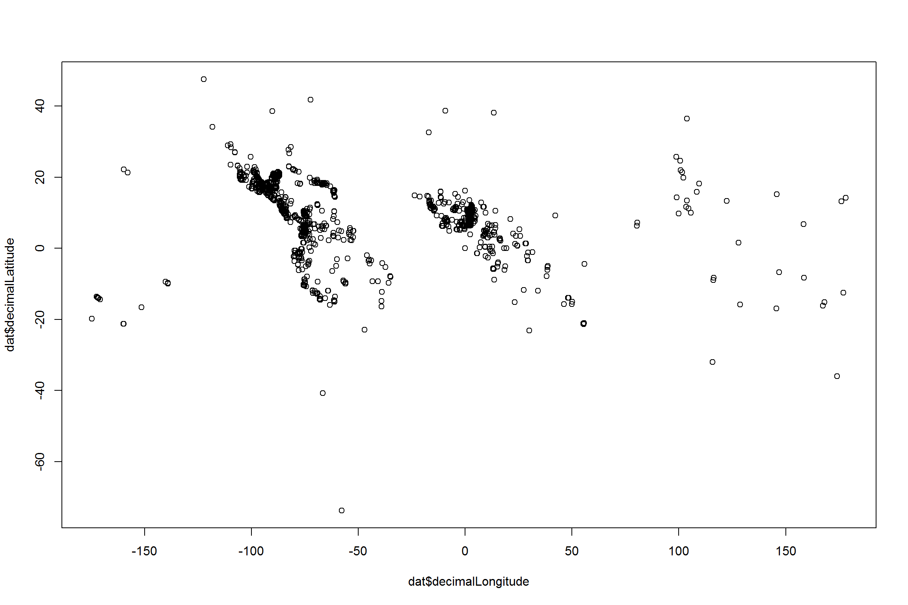

In this exercise we will use the rgbif library for communication with GBIF and the tidyverse library for data management.
In the following tutorial, we will go through the questions one-by-one. The suggested answers are by no means the only correct ones.
GBIF hosts a large number of records and downloading all records might take some time (also the download limit using occ_search is 250,000), so it is worth checking first how many records are available. We do this using the return argument of the occ_search function, which will only return meta-data on the record. Chose a species from your project taxon, for demonstration will download records for the Malvaceae family. We’ll first download data for a single, wide-spread species, Ceiba pentandra:
# Search occurrence records
dat <- occ_search(scientificName = "Ceiba pentandra", return = "data", limit = 10000)nrow(dat) # Check the number of records
## [1] 5455
head(dat) # Check the data
## # A tibble: 6 x 167
## name key decimalLatitude decimalLongitude issues datasetKey
## <chr> <int> <dbl> <dbl> <chr> <chr>
## 1 Ceib~ 1.81e9 20.7 -88.1 cdrou~ 50c9509d-~
## 2 Ceib~ 1.81e9 21.0 -89.6 cdrou~ 50c9509d-~
## 3 Ceib~ 1.81e9 14.4 -60.9 cdrou~ 50c9509d-~
## 4 Ceib~ 1.81e9 15.8 -96.1 cdrou~ 50c9509d-~
## 5 Ceib~ 1.81e9 19.1 -96.1 cdrou~ 50c9509d-~
## 6 Ceib~ 1.83e9 23.2 -106. gass84 50c9509d-~
## # ... with 161 more variables: publishingOrgKey <chr>, networkKeys <chr>,
## # installationKey <chr>, publishingCountry <chr>, protocol <chr>,
## # lastCrawled <chr>, lastParsed <chr>, crawlId <int>, extensions <chr>,
## # basisOfRecord <chr>, taxonKey <int>, kingdomKey <int>,
## # phylumKey <int>, classKey <int>, orderKey <int>, familyKey <int>,
## # genusKey <int>, speciesKey <int>, scientificName <chr>, kingdom <chr>,
## # phylum <chr>, order <chr>, family <chr>, genus <chr>, species <chr>,
## # genericName <chr>, specificEpithet <chr>, taxonRank <chr>,
## # dateIdentified <chr>, coordinateUncertaintyInMeters <dbl>, year <int>,
## # month <int>, day <int>, eventDate <chr>, modified <chr>,
## # lastInterpreted <chr>, references <chr>, license <chr>,
## # identifiers <chr>, facts <chr>, relations <chr>, geodeticDatum <chr>,
## # class <chr>, countryCode <chr>, country <chr>, rightsHolder <chr>,
## # identifier <chr>, verbatimEventDate <chr>, datasetName <chr>,
## # verbatimLocality <chr>, gbifID <chr>, collectionCode <chr>,
## # occurrenceID <chr>, taxonID <chr>, catalogNumber <chr>,
## # recordedBy <chr>, http...unknown.org.occurrenceDetails <chr>,
## # institutionCode <chr>, rights <chr>, eventTime <chr>,
## # occurrenceRemarks <chr>,
## # http...unknown.org.http_..rs.gbif.org.terms.1.0.Multimedia <chr>,
## # identificationID <chr>, elevation <dbl>, continent <chr>,
## # stateProvince <chr>, waterBody <chr>, habitat <chr>, locality <chr>,
## # eventRemarks <chr>, fieldNumber <chr>, identifiedBy <chr>,
## # collectionID <chr>, nomenclaturalCode <chr>, institutionID <chr>,
## # language <chr>, type <chr>, higherGeography <chr>,
## # verbatimElevation <chr>, elevationAccuracy <dbl>, recordNumber <chr>,
## # municipality <chr>, ownerInstitutionCode <chr>, county <chr>,
## # dynamicProperties <chr>,
## # http...unknown.org.http_..rs.tdwg.org.dwc.terms.ResourceRelationship <chr>,
## # higherClassification <chr>, reproductiveCondition <chr>,
## # vernacularName <chr>, individualCount <int>, establishmentMeans <chr>,
## # samplingEffort <chr>, higherGeographyID <chr>, fieldNotes <chr>,
## # georeferencedDate <chr>, georeferencedBy <chr>, endDayOfYear <chr>,
## # georeferenceVerificationStatus <chr>, disposition <chr>,
## # locationID <chr>, ...
plot(dat$decimalLatitude ~ dat$decimalLongitude) # Look at the georeferenced records
So luckily there are a good number of records available. An as the quick visualization shows, a lot of the have geographic coordinates. See exercise eight for more detailed plotting. In the next exercise we will see how to reduce the amount of information and quality check the data. But let’s first download more relevant data for the project.
For your project, we are interested not only in one species, but a larger taxonomic group. You can search for higher rank taxa using GBIF’s taxonKey. The taxonKey is a unique identifier for each taxon; we can obtain it from the taxon name via the name _suggest function. Since higher taxa might have a lot of records and downloading might take a lot of time, we will first check how many records are available. Here we will look at the entire genus Ceiba.
# Use the name_suggest function to get the gbif taxon key
tax_key <- name_suggest(q = "Ceiba", rank = "genus")
# Sometimes groups have multiple taxon keys, in this case three, so we will
# check how many records are available for them
lapply(tax_key$key, "occ_count")
## [[1]]
## [1] 12100
##
## [[2]]
## [1] 17
##
## [[3]]
## [1] 0
# Here the firsrt one is relevant, check for your group!
tax_key <- tax_key$key[1]There are 12000 records available for Ceiba globally. To only get the records for Brazil, you can use the country argument.
occ_count(tax_key, country = "BR")
## [1] 2656dat <- occ_search(taxonKey = tax_key, return = "data", country = "BR", hasCoordinate = T,
limit = 10000)That leaves us with 1734 records. If you are satisfied for your group you can go to the next step and save the data to the working directory. The limit for record searching using rgbif is 250,000 records, if your group has more records you may limit the geographic area to the north east of Brazil. To do this you can use the Well-known-text format (WKT) to specify an area. Here we use a very simple rectangle, feel free to experiment
study_a <- "POLYGON((-34 0, -48 0, -48 -15, -34 -15, -34 0))"
dat_ne <- occ_search(taxonKey = tax_key, return = "data", hasCoordinate = T,
geometry = study_a, limit = 10000)write_csv(dat, path = "inst/gbif_occurrences.csv")If you want to use records from GBIF for publication, please make sure you cite them propperly, using a DOI, you can get a DOI by using occ_download.